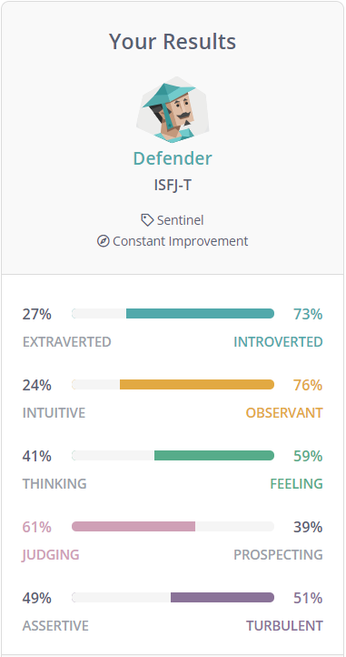
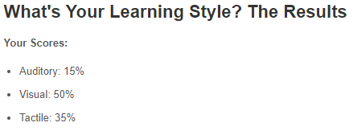
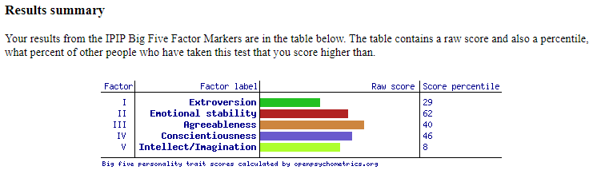

Personal Profile
Myers-Briggs test
What does these results mean to me?
My personality being the Defender, this portrays me to be more introverted – shy and not wanting to interact with other people, observant – analyse situations and individuals’ expressions, feeling – more emotionally driven than rationally, judging – I tend to identify whether a risk is worth taking or not, and turbulent – always pushing myself and going and beyond with my work and tasks. These results gave me a new overview of myself where I am the reserved type of person who has good analytical abilities, well-developed people skills and robust social relationships.
How can these results influence my attitude in my team?
With my turbulent attribute predominantly, I believe getting tasks down within my team will not an issue as I take my responsibility seriously as I intend to consistently go above and beyond with my tasks and doing things to exceed expectations of my team members. However, my introverted attribute being dominant may cause my communication with my team members to be ineffective or inefficient as I may not appropriately participate or collaborate with team members as I am expected to which could cause misinformation around my group, as well as difficulties as these discussions may not function as intended to.How can these results influence my decision in forming a team?
When creating a team, I would distribute the workload to my other team members and give them tasks where they can use their strengths to complete it efficiently, so that I will not be overloaded with work and burnt out. Furthermore, I would try to organise team discussions regularly to understand the progression of everyone’s tasks and allow any assistance to each member. This will also help me be more involved in these discussions and collaborate on certain ideas if this is occurred on regular basis, allowing myself to be confident and active during these discussions.Learning Style test
What does these results mean to me?
These results portray me as a visual learner where I should learn new concepts or ideas by reading or seeing pictures. From this idea, it is better for me to understand and remember things by sight and can picture what I am learning in my head. Furthermore, I should be neat and clean and avoid sounds and spoken directions as this can cause difficulties during my learning.
How can these results influence my attitude in my team?
As being a visual learner, I may bring up ideas to my team members to try implementing tackling visual tasks rather than tasks that are based on reading and hearing. From this, I believe this different approach may assist some members who are also a visual learner to efficiently finish their tasks, as well as open a new pathway for each member on completing their tasks than the generic way, for example moving away from reading articles and blogs.How can these results influence my decision in forming a team?
When creating my team, I would aim to find individuals that are visual learners as they will make it easier for the team as they will have similar ways of learning new concepts, tackling their tasks, and collaborating with ideas. Furthermore, choosing team members who learn, and tackles challenges different from visual learners will make it difficult to cooperate as we may find ourselves in arguments and with conflicting ideas.Big Five Personality test
What does these results mean to me?
My extroversion results depict myself to be in the middle with a score percentile of 29, meaning that I can usually be outgoing and social and shy and nervous depending on the environment and the mood. My emotional stability shows to be very high with a score percentile of 62, explaining that I tend to be emotionally calm and stable, and I react less emotionally and less easily upset. My agreeableness is also shown to be high with a score percentile of 40, demonstrating that I am friendly and optimistic which allows me to make friends easily and always positive about certain outcomes such as this assignment. My conscientiousness is seen to be high with a score percentile of 46, indicating that I am careful with my actions and words, as well as diligent in my work and tasks which means I will perform better on completing tasks on time. Lastly, my intellect/imagination scored low with a score percentile of 8, signifying that I tend to follow traditional and conventional paths than using my intellect or creativity. From this, this could make it difficult for tasks that are designed to use your imaginary and creativeness which can make it harder for me to handle and complete the assignment.